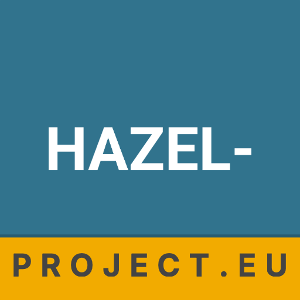

☰
HAZEL
Hazardous Atmosphere Zoning for European Locations

HAZEL
Hazardous Atmosphere Zoning for European Locations
✕
Workplace
New scenario
Saved scenarios
Chemical library
Docs
How to use
About
Source code ↗
Other tools
ADR Apka
UN number lookup, exemption calculator, tunnel restrictions
app.kocie.mba ↗
ADR EDI
Transport documents and annual dangerous-goods reports
Currently available in Polish only
edi.kocie.mba ↗
TACHO
Driver working-time tracking based on EC 561/2006
tacho.kocie.mba ↗
New scenario
‹ Back
Next ›
Start over